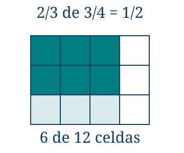
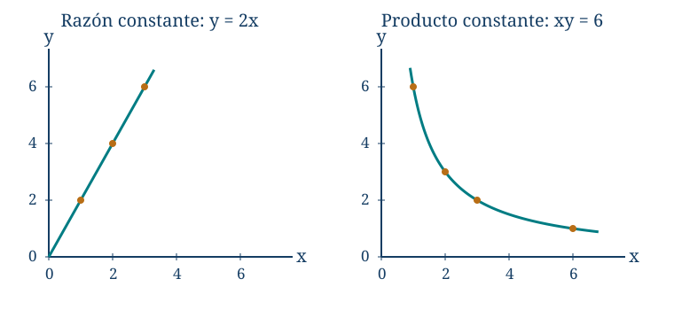

Fracciones, razones, proporciones y porcentajes
← Los números, el orden y la recta real · Índice del libro · Siguiente →
Una receta mezcla tres vasos de jugo concentrado con dos de agua. Para preparar el doble podemos usar seis y cuatro; si usamos cuatro y tres, en cambio, la bebida cambia. Añadir un vaso a cada ingrediente conserva la diferencia entre las cantidades, pero altera la mezcla. Lo que necesitamos conservar es la relación entre ellas.
La misma dificultad aparece al comparar precios, repartir un trabajo o interpretar un descuento. Antes de hacer una cuenta conviene reconocer qué representa cada cantidad y qué estamos tomando como unidad. «Tres cuartos» puede describir una longitud, un reparto o una operación sobre otra cantidad. La escritura se mantiene; el significado nace del problema.
Sumar \(1/2+1/3\) exige expresar ambas cantidades en partes del mismo tamaño; así obtendremos \(5/6\). Tomar \(3/4\) de doce exige reconocer cuál es el todo sobre el que actúa la fracción y da nueve. Para recuperar un valor que aumentó un \(10\%\) y llegó a \(110\), tendremos que deshacer el factor del aumento: el inicio era cien. En cada caso, identificar la unidad o la base permite escoger la operación y comprobar su resultado.
Elegir la unidad
Cortamos una cinta de un metro en cuatro partes iguales y tomamos tres. Cada parte mide \(1/4\) de metro; juntas miden \(3/4\) de metro. La igualdad de las partes es esencial: elegir tres de cuatro trozos de longitudes distintas no garantiza haber elegido tres cuartos de la cinta.
También podemos repartir tres metros entre cuatro personas. Cada una recibe \(3/4\) de metro, porque cuatro veces esa longitud reconstruye los tres metros. La fracción aparece aquí como cociente. Si pedimos tres cuartos de una cinta de doce metros, aparece como operador: dividimos los doce metros en cuatro partes iguales y tomamos tres. El resultado es \(12(3/4)=9\) metros. Siempre debemos poder identificar el todo, la unidad y el tamaño de una parte.
Estas interpretaciones permiten entender fracciones mayores que uno. Cinco cuartos de metro son una unidad completa y otro cuarto. Para una cantidad negativa, como un saldo, la fracción puede llevar signo: \(-3/4\) de unidad es el opuesto de \(3/4\). El modelo de trozos sirve para cantidades no negativas; las leyes de los racionales extienden las operaciones a los signos.
Problema 1. Una fracción, tres situaciones
Enunciado. Da significado a \(3/4\) como parte de una unidad, como cociente y como operador. Calcula tres cuartos de veinte metros.
Solución. Podemos tomar tres de las cuatro partes iguales de un metro; repartir tres metros por igual entre cuatro personas; o aplicar a una longitud la operación de dividirla por cuatro y multiplicarla por tres. En las dos primeras situaciones obtenemos \(3/4\) de metro. En la tercera, la cantidad inicial puede ser cualquiera: para veinte metros, cada cuarto mide cinco y tres cuartos miden quince. La respuesta es \(15\) metros. La fracción \(3/4\) sola es un número; la longitud que produce depende de la unidad o cantidad sobre la que actúe.
Dividir cada cuarto en tres partes iguales convierte los cuartos en doceavos. Los tres cuartos ocupan nueve de las nuevas partes: \(3/4=9/12\). En general, para enteros \(a,b,k\) con \(b\ne0\) y \(k\ne0\),
\[\frac ab=\frac{ka}{kb}.\]
Podemos comprobarlo sin depender del dibujo: las dos fracciones son iguales porque sus productos cruzados, \(a(kb)\) y \(b(ka)\), coinciden. Simplificar consiste en recorrer esta igualdad en sentido inverso. Solo se pueden cancelar factores comunes de todo el numerador y todo el denominador. En \((2+3)/2\) el dos no es factor de la suma completa; cancelar ese sumando cambiaría \(5/2\) por \(1+3=4\).
Todo racional puede escribirse con denominador positivo. Si numerador y denominador son enteros, dividir ambos por su máximo común divisor da una fracción reducida. Para los no nulos este divisor existe porque el conjunto de divisores positivos comunes es finito y contiene al uno. Para el cero usamos \(0=0/1\).
Problema 2. Reducir también exige cuidar el signo
Enunciado. Reduce \(84/(-126)\) a una fracción con denominador positivo y sin factores comunes.
Solución. Pasamos el signo al numerador: \(84/(-126)=-84/126\). Los números \(84\) y \(126\) son \(2\cdot42\) y \(3\cdot42\), de modo que dividimos ambos términos por \(42\) y obtenemos \(-2/3\). Los enteros dos y tres no comparten ningún divisor mayor que uno; la fracción está reducida. Comprobamos la equivalencia: \((-84)\cdot3=126\cdot(-2)=-252\). El valor negativo no desaparece al simplificar.
Operar con partes del mismo tamaño
Para sumar medio metro y un tercio de metro debemos contar partes comparables. Un sexto de metro sirve: el medio contiene tres sextos y el tercio contiene dos. Por tanto \(1/2+1/3=5/6\). La suma \(2/5\) surgiría de contar piezas de distinto tamaño como si fueran iguales.
Para denominadores no nulos \(b,d\), multiplicamos las dos fracciones por formas adecuadas de uno:
\[\frac ab+\frac cd=\frac{ad}{bd}+\frac{bc}{bd}=\frac{ad+bc}{bd}.\]
La resta se obtiene del mismo modo cambiando la suma del numerador por una resta. El producto \(bd\) siempre sirve de denominador común; un múltiplo común menor puede ahorrar cuentas. Los signos se manejan con las reglas del capítulo anterior.
Problema 3. Restar sin cambiar de unidad
Enunciado. Calcula \(5/6-3/8\) y explica la elección del denominador.
Solución. El número \(24\) es múltiplo de seis y de ocho. Cada sexto contiene cuatro veinticuatroavos y cada octavo contiene tres; así \(5/6=20/24\) y \(3/8=9/24\). Al restar obtenemos \(11/24\). La fracción está reducida porque once no divide veinticuatro. Como \(5/6>3/4\) y \(3/8<1/2\), la diferencia debe ser positiva; el resultado respeta esa comparación.

Tomar dos tercios de tres cuartos permite descubrir la multiplicación. Dividimos la unidad en cuatro columnas iguales y cada columna en tres filas iguales. Hay doce celdas del mismo tamaño. Tres columnas ocupan \(3/4\) de la unidad; dos de sus tres filas ocupan seis celdas. Por eso \((2/3)(3/4)=6/12=1/2\).
La doble partición explica, para fracciones no negativas de denominadores positivos, por qué se multiplican numeradores y denominadores: cada celda ocupa \(1/(bd)\) de la unidad y se eligen \(ac\) celdas. Si alguna fracción supera uno, repetimos las unidades necesarias; el tamaño de cada celda y el número de celdas elegidas siguen la misma regla. Se obtiene \((a/b)(c/d)=ac/(bd)\). La distributividad y las reglas de signos extienden la identidad a todos los racionales con denominadores no nulos. Una fracción que actúa sobre otra toma esa segunda cantidad como su todo inmediato; el resultado se expresa respecto de la unidad inicial.
Problema 4. Una parte de lo que queda
Enunciado. Una reserva contiene \(3/4\) de su capacidad. Se consume \(2/3\) del contenido que tiene. ¿Qué fracción de la capacidad se consume y cuál queda?
Solución. La base del consumo es el contenido actual, \(3/4\) de la capacidad. Se consume \((2/3)(3/4)=1/2\) de la capacidad. Para hallar lo que queda restamos a lo que había: \(3/4-1/2=1/4\). También podemos tomar el tercio que no se consumió: \((1/3)(3/4)=1/4\). Ambos caminos coinciden. Restar \(2/3\) directamente a \(3/4\) habría confundido una fracción del contenido con una fracción de la capacidad.
Dividir responde a una pregunta distinta. Si tenemos \(3/4\) de metro y cada pieza mide \(1/8\) de metro, caben seis piezas. La igualdad \((1/8)\cdot6=3/4\) comprueba la respuesta. En general, dividir \(a/b\) por un racional no nulo \(c/d\) consiste en hallar el número \(x\) que cumple \((c/d)x=a/b\). Multiplicar ambos lados por \(d/c\) da
\[\frac ab:\frac cd=\frac ab\frac dc=\frac{ad}{bc},\qquad b,c,d\ne0.\]
El inverso aparece porque deshace la multiplicación por el divisor. La condición de divisor distinto de cero asegura que ese inverso existe y que la ecuación determina un único cociente, como vimos al estudiar la división en el capítulo anterior. El cociente puede ser mayor que el dividendo: al medir una longitud con unidades pequeñas, obtenemos un número grande de esas unidades.
Problema 5. Medir cuántas veces cabe
Enunciado. ¿Cuántas porciones de \(7/15\) de litro representa una cantidad de \(7/10\) de litro? Admite una fracción de porción.
Solución. Buscamos \(x\) tal que \((7/15)x=7/10\). Como \(7/15\ne0\), multiplicamos por \(15/7\) y obtenemos \(x=(7/10)(15/7)=3/2\). Hay una porción y media. La comprobación es \((3/2)(7/15)=21/30=7/10\). Si solo se admitieran porciones completas, podríamos servir una y sobrarían \(7/10-7/15=7/30\) de litro; esa sería otra pregunta.
Problema 6. La barra agrupa una suma
Enunciado. Calcula \(\dfrac{1}{1/2+1/3}\) y compara con \(\dfrac{1}{1/2}+\dfrac{1}{1/3}\).
Solución. En la primera expresión sumamos el denominador: \(1/2+1/3=5/6\ne0\). Su inverso es \(6/5\). En la segunda invertimos por separado y sumamos: \(2+3=5\). Los resultados son distintos porque las operaciones solicitadas son distintas. La primera respuesta se comprueba con \((5/6)(6/5)=1\). La inversión de una suma no se distribuye entre sus términos.
Operaciones con fracciones
Estas identidades valen para racionales y, leídas como cocientes, también para expresiones reales definidas. Las condiciones que acompañan a cada fila son parte de la regla.
| Propiedad | Fórmula y condiciones de uso |
|---|---|
| Fracciones equivalentes | \(a/b=(ka)/(kb)\), con \(b,k\ne0\). Se cancelan factores completos, no sumandos. |
| Igualdad | \(a/b=c/d\Longleftrightarrow ad=bc\), con \(b,d\ne0\). |
| Suma | \(a/b+c/d=(ad+bc)/(bd)\), con \(b,d\ne0\). |
| Resta | \(a/b-c/d=(ad-bc)/(bd)\), con \(b,d\ne0\). |
| Producto | \((a/b)(c/d)=ac/(bd)\), con \(b,d\ne0\). |
| Cociente | \((a/b):(c/d)=ad/(bc)\), con \(b,c,d\ne0\). La fracción divisora debe ser no nula. |
Pruebas. Apéndice: «Fracciones: representantes y operaciones».
Comparar mediante una razón
En la receta inicial, por cada tres vasos de concentrado se usan dos de agua. La razón concentrado/agua es \(3/2\); la razón concentrado/bebida es \(3/5\), si los volúmenes se suman. Son comparaciones diferentes. La escritura \(3:2\) conserva el orden de las cantidades; invertirlo da \(2:3\).
Una razón entre cantidades de la misma magnitud se vuelve un número sin unidad al expresarlas en la misma unidad: \(150\,\mathrm{cm}/(2\,\mathrm m)=150/200=3/4\). Entre magnitudes distintas puede quedar una unidad compuesta: litros por minuto, kilómetros por hora o pesos por kilogramo. A estas razones usadas para describir un cambio o un rendimiento las llamaremos tasas. Su interpretación exige conservar las unidades.
Dos razones forman una proporción cuando son iguales. Para \(b,d\ne0\), la equivalencia
\[\frac ab=\frac cd\quad\Longleftrightarrow\quad ad=bc\]
se demuestra multiplicando por \(bd\) o dividiendo por él. El producto cruzado verifica una igualdad de razones ya planteada con sentido; no decide por sí mismo si las magnitudes de un problema son proporcionales.
Problema 7. Del cociente entre grupos a la parte del total
Enunciado. En un grupo, la razón entre chicos y chicas es \(3:5\). Hay \(25\) chicas. ¿Cuántos chicos hay y qué fracción del total representan?
Solución. Las cinco partes de chicas corresponden a veinticinco personas, de modo que cada parte contiene cinco. Las tres partes de chicos contienen quince. El total es cuarenta y la fracción de chicos es \(15/40=3/8\). La razón chicos/chicas es \(15/25=3/5\), mientras que chicos/total es \(3/8\). No se pueden intercambiar los denominadores: cada uno nombra una base distinta.
Problema 8. Repartir conservando una receta
Enunciado. Se preparan \(750\) mililitros de bebida con concentrado y agua en razón \(3:2\). Supón que los volúmenes se suman. ¿Cuánto se usa de cada ingrediente?
Solución. La bebida contiene cinco partes iguales de volumen. Cada parte mide \(750/5=150\) mililitros. El concentrado ocupa tres partes, \(450\) mililitros, y el agua dos, \(300\). Sumamos para comprobar el total: \(450+300=750\); dividimos para comprobar la receta: \(450/300=3/2\). La hipótesis sobre la suma de volúmenes permite pasar de las partes al volumen final.
Cuando una razón permanece constante
Si cada cuaderno cuesta lo mismo y no hay cargos adicionales, el precio total es el número de cuadernos multiplicado por ese precio unitario. Diremos que dos cantidades guardan proporcionalidad directa cuando existe una constante \(k\) tal que \(y=kx\) en todo el dominio considerado. Para \(x\ne0\), equivale a que \(y/x=k\). En contextos de cantidades positivas tomamos \(k>0\); el caso \(k=0\) describe una cantidad siempre nula y suele excluirse al hablar de proporción entre cantidades positivas.
La constancia del precio unitario permite pasar de una compra a cualquier otra dentro del dominio del modelo: duplicar \(x\) duplica \(y\) porque ambas cantidades siguen ligadas por el mismo factor. Para justificar el modelo necesitamos esa condición general, que puede proceder del enunciado o adoptarse expresamente como hipótesis; comprobar una duplicación aislada solo aporta un caso. La gráfica representa cada par \((x,y)\) con \(x\) en el eje horizontal e \(y\) en el vertical. Los puntos de \(y=kx\) quedan sobre una recta que pasa por el origen, si este pertenece al dominio. Cuando contamos cuadernos, seleccionamos de esa recta los puntos de abscisa entera; la recta completa corresponde a extender la relación a otras entradas.
Problema 9. Recuperar el valor de una unidad
Enunciado. Tres cuadernos iguales cuestan \(4\,200\) pesos en una venta sin descuentos ni cargos adicionales. ¿Cuánto cuestan cinco?
Solución. Cada cuaderno cuesta \(4\,200/3=1\,400\) pesos. Cinco cuestan \(5\cdot1\,400=7\,000\). La razón precio/cantidad es la misma: \(4\,200/3=7\,000/5\). La proporcionalidad se apoya en que cada cuaderno aporta el mismo precio y no existe un cargo fijo. Multiplicar \(4\,200\) por \(5/3\) expresa el mismo razonamiento de una sola vez.
Problema 10. Una diferencia constante no basta
Enunciado. Un servicio cobra \(1\,000\) pesos de cargo fijo y \(500\) por cada unidad usada. Dos unidades cuestan \(2\,000\) y cuatro cuestan \(3\,000\). ¿Hay proporcionalidad directa? ¿Cuánto cuestan seis unidades?
Solución. Las razones son \(2\,000/2=1\,000\) y \(3\,000/4=750\) pesos por unidad; no coinciden. El modelo es \(y=1\,000+500x\), porque al cargo fijo se suma el uso. Seis unidades cuestan \(1\,000+500\cdot6=4\,000\) pesos. Usar una regla de tres con el dato de dos unidades daría \(6\,000\), que contaría el cargo fijo tres veces. La regularidad del incremento describe una relación afín; su estudio general vendrá más adelante.
Si cuatro personas se reparten por igual una tarea de sesenta horas de trabajo individual, cada una realiza quince horas. Con seis personas serían diez horas cada una. El producto número de personas por tiempo permanece en sesenta. Es un modelo ideal: supone igual rendimiento, trabajo divisible y posibilidad de realizarlo en paralelo.
Para cantidades positivas, hay proporcionalidad inversa cuando \(xy=K\) con \(K>0\), o equivalentemente \(y=K/x\). Multiplicar \(x\) por \(c>0\) divide \(y\) por \(c\). La gráfica ya no es una recta: sus puntos se acercan al eje horizontal al aumentar \(x\), sin tocarlo para ningún \(x\) finito. Una dependencia decreciente no tiene por qué ser inversamente proporcional; también debe conservar el producto.

Problema 11. Más personas, bajo hipótesis precisas
Enunciado. Cuatro personas completan una tarea en quince horas. ¿Cuánto tardarían seis, si todas rinden igual, la tarea se puede dividir y no hay pérdidas al coordinarse?
Solución. El trabajo requerido equivale a \(4\cdot15=60\) horas de una persona. Con seis trabajando simultáneamente, el tiempo es \(60/6=10\) horas. El producto \(6\cdot10\) recupera las sesenta horas de trabajo. No estamos afirmando que toda tarea real se acelere así: si una etapa debe esperar a otra, o si el rendimiento cambia, el producto podría dejar de ser constante.
Problema 12. Leer dos invariantes en una tabla
Enunciado. Para \(x=1,2,4\), las cantidades de una primera tabla son \(y=2,4,8\); las de una segunda, \(y=12,6,3\). Identifica la relación en cada tabla y explica qué se puede afirmar fuera de los datos.
Solución. En la primera tabla los cocientes \(y/x\) valen dos; sus datos son compatibles con \(y=2x\). En la segunda los productos \(xy\) valen doce; son compatibles con \(y=12/x\). Las tablas verifican la regla en sus tres entradas. Para usarla en otro valor debemos asumir ese modelo o justificarlo con las condiciones del fenómeno. Ningún número finito de entradas determina por sí solo una ley sobre todos los positivos.
Problema 13. Dos factores que actúan a la vez
Enunciado. Cuatro máquinas producen \(1\,200\) piezas en seis horas. ¿Cuántas producirán seis máquinas en cinco horas, si el rendimiento de cada una es constante e idéntico y sus producciones se suman?
Solución. Las cuatro máquinas acumularon \(4\cdot6=24\) horas de máquina. Su rendimiento fue \(1\,200/24=50\) piezas por hora de máquina. Las seis máquinas durante cinco horas acumulan treinta horas de máquina; producirán \(50\cdot30=1\,500\) piezas. También se obtiene \(1\,200(6/4)(5/6)=1\,500\). Un factor aumenta la cantidad de máquinas y el otro reduce el tiempo; las hipótesis permiten multiplicarlos.
Problema 14. La escala de un área
Enunciado. Un plano usa escala \(1:25\,000\). Una longitud mide \(3{,}6\) centímetros y una región tiene área de \(9\) centímetros cuadrados en el plano. Obtén la longitud y el área correspondientes, suponiendo una reducción geométrica uniforme.
Solución. Un centímetro representa \(25\,000\) centímetros, es decir, \(250\) metros. La longitud buscada es \(3{,}6\cdot250=900\) metros. Para el área hay dos dimensiones que cambian: un cuadrado de un centímetro de lado representa un cuadrado de \(250\) metros de lado, con área \(62\,500\) metros cuadrados. Nueve centímetros cuadrados representan \(9\cdot62\,500=562\,500\) metros cuadrados. Multiplicar el área solo por \(250\) confundiría una longitud con una superficie; el factor de área es \(250^2\) cuando comparamos estas unidades.
Problema 15. Una tasa conserva sus unidades
Enunciado. Una máquina llena botellas de \(3/4\) de litro con un caudal constante de tres litros por minuto. ¿Cuánto tarda en llenar veinte botellas, sin tiempos de cambio ni pérdidas?
Solución. El volumen total es \(20(3/4)=15\) litros. Si el tiempo es \(t\) minutos, la máquina entrega \(3t\) litros; por tanto \(t=15/3=5\) minutos. Las unidades también lo muestran: litros divididos por litros por minuto dan minutos. Dividir veinte por tres mezclaría un número de botellas con un caudal medido en litros por minuto.
Relaciones proporcionales
La fórmula se usa cuando la constancia ha sido justificada o adoptada como hipótesis del modelo. Una coincidencia aislada no demuestra proporcionalidad.
| Propiedad | Fórmula y condiciones de uso |
|---|---|
| Proporción | \(a/b=c/d\Longleftrightarrow ad=bc\), con \(b,d\ne0\) y las razones planteadas con unidades compatibles. |
| Proporcionalidad directa | \(y=kx\) en todo el dominio. Para \(x\ne0\), equivale a \(y/x=k\). En cantidades positivas se toma \(k>0\). |
| Proporcionalidad inversa | \(xy=K\Longleftrightarrow y=K/x\), con \(x,y>0\) y \(K>0\). |
| Cambio de escala | En el modelo directo, sustituir \(x\) por \(cx\) multiplica \(y\) por \(c\); en el inverso, divide \(y\) por \(c\). Se supone \(c>0\) y entradas admitidas por el dominio. |
Pruebas. Apéndice: «Razones y proporcionalidad».
Un porcentaje necesita una base
Decir \(p\%\) de una cantidad \(B\) significa multiplicarla por \(p/100\). Así \(18\%\) de \(250\) es \((18/100)250=45\). Si una parte es \(A\) y el todo de referencia es \(B\ne0\), su porcentaje respecto de esa base es \(100A/B\). En los problemas de partes de un todo, la base será positiva y la parte estará entre cero y la base; en otras comparaciones un porcentaje puede superar cien.
Pasar de una fracción a un porcentaje consiste en expresar la misma razón con cien como referencia. Por ejemplo, \(3/8=0{,}375=37{,}5\%\). El símbolo de porcentaje ya incluye una división por cien: \(0{,}375\%\) es \(0{,}00375\), no \(0{,}375\).
Problema 16. Hallar una parte y comprobarla
Enunciado. En un conjunto de \(250\) piezas, el \(18\%\) necesita revisión. ¿Cuántas piezas son y cuántas no la necesitan?
Solución. Una centésima parte del conjunto son \(250/100=2{,}5\) piezas como unidad de cálculo. Dieciocho centésimas son \(18\cdot2{,}5=45\) piezas, un número entero como exige el recuento final. Quedan \(250-45=205\). Comprobamos \(45/250=0{,}18\). Si los datos hubieran dado una cantidad no entera de piezas, no podríamos redondearla sin aclarar que el porcentaje era aproximado.
Un aumento del \(p\%\) sobre una cantidad inicial positiva \(B\) produce
\[B+\frac p{100}B=B\left(1+\frac p{100}\right).\]
Un descuento del \(p\%\), con \(0\le p\le100\), produce \(B(1-p/100)\). Los factores se obtienen separando la cantidad inicial y su cambio. Para recuperar el inicio dividimos el resultado por el factor, siempre que no sea cero. Un descuento del cien por ciento anula toda cantidad inicial y borra la información necesaria para recuperarla.
Problema 17. El precio antes del descuento
Enunciado. Después de un descuento del \(20\%\), un precio queda en \(480\) unidades monetarias. ¿Cuál era el precio original?
Solución. Después del descuento se conserva el \(80\%\) del precio inicial \(B\). La ecuación es \(0{,}8B=480\), y como \(0{,}8\ne0\), obtenemos \(B=480/0{,}8=600\). Comprobamos: el descuento es \(120\) y \(600-120=480\). Sumar el \(20\%\) de \(480\) daría \(576\), porque usaría como base el precio ya rebajado.
La variación relativa entre un valor inicial positivo \(B\) y uno final \(F\) es \((F-B)/B\); en porcentaje es \(100(F-B)/B\). Se divide por el valor inicial porque se pregunta qué fracción de aquel valor representa el cambio. Si el inicial es cero, esta variación relativa no está definida; podemos informar la diferencia absoluta. Con bases negativas hay convenciones específicas según el contexto, por lo que aquí trabajaremos con bases positivas.
Problema 18. El regreso usa otra base
Enunciado. Una cantidad pasa de \(120\) a \(150\) y luego vuelve a \(120\). Calcula el porcentaje de aumento y el de disminución.
Solución. El aumento es treinta sobre una base de ciento veinte: \(30/120=1/4=25\%\). El regreso reduce treinta sobre una base de ciento cincuenta: \(30/150=1/5=20\%\). La diferencia absoluta es la misma, pero las bases no. Los factores se comprueban con \(120(1{,}25)=150\) y \(150(0{,}8)=120\).
Cambios que se encadenan
Para aplicar dos cambios seguidos, cada uno actúa sobre el resultado del anterior. Si los cambios relativos son \(r\) y \(s\) —escritos como números, no como porcentajes enteros—, el factor final es \((1+r)(1+s)\). Al desarrollar obtenemos \(1+r+s+rs\). El término \(rs\) recoge el cambio que el segundo factor aplica al incremento o a la disminución producida por el primero. El resultado incluye esa contribución además de la suma de los dos cambios relativos. El modelo admite disminuciones mediante valores negativos, siempre que los factores respeten las restricciones de la cantidad estudiada.
Problema 19. Subir y bajar lo mismo
Enunciado. Un valor inicial positivo aumenta un \(20\%\) y después disminuye un \(20\%\). Obtén su variación neta sin elegir un valor inicial particular.
Solución. Si el valor inicial es \(B>0\), el final es \(B(1{,}2)(0{,}8)=0{,}96B\). Se conserva el \(96\%\) del inicio: la disminución neta es del \(4\%\). La segunda reducción se calcula sobre una cantidad ya aumentada. El argumento vale para todo \(B>0\) porque el cociente final/inicial es siempre \(0{,}96\).
Problema 20. Dos descuentos y su equivalente
Enunciado. Un precio recibe un descuento del \(15\%\) y luego otro del \(10\%\). ¿Qué descuento único produce el mismo resultado? ¿Importa el orden bajo estas condiciones?
Solución. Los factores son \(0{,}85\) y \(0{,}90\). Su producto es \(0{,}765\), así que se conserva el \(76{,}5\%\) y el descuento equivalente es del \(23{,}5\%\). El orden no cambia el producto, por conmutatividad. Esto supone que ambos descuentos se aplican sucesivamente a todo el precio vigente y que no hay redondeos intermedios, topes o cargos adicionales. Sumar quince y diez habría dado un descuento distinto, del \(25\%\).
Si una tasa pasa del \(8\%\) al \(10\%\), su diferencia es de dos puntos porcentuales. El cambio relativo de la tasa, en cambio, es \((10-8)/8=25\%\). Es conveniente escribir las dos comparaciones completas antes de abreviarlas. El aumento de dos puntos no dice que una cantidad medida por esa tasa haya aumentado en dos por ciento.
Problema 21. Dos maneras de comparar tasas
Enunciado. La fracción de participantes que elige una opción pasa del \(8\%\) al \(10\%\) en dos grupos del mismo tamaño. Expresa la diferencia en puntos porcentuales y el aumento relativo de esa fracción.
Solución. La diferencia es \(10-8=2\) puntos porcentuales. La tasa final dividida por la inicial es \(10/8=1{,}25\), de modo que el aumento relativo es del \(25\%\). Con grupos de cien personas, los recuentos pasarían de ocho a diez: dos personas más, equivalentes a un cuarto de las ocho iniciales. Si los grupos tuvieran tamaños distintos, las tasas seguirían admitiendo esta comparación, pero los recuentos no se deducirían de ella sin conocer las bases.
Reunir cantidades con bases diferentes
Para reunir los porcentajes de dos grupos necesitamos recuperar cuántos elementos aporta cada uno. Pensemos en sus tamaños como las bases de las que se tomó cada proporción: multiplicar el tamaño por la proporción devuelve el recuento que queremos sumar. Tomaremos grupos disjuntos, con las bases expresadas en una unidad común, para que cada elemento cuente una sola vez en el conjunto final. Si las bases positivas son \(B_1,B_2\) y las proporciones son \(r_1,r_2\), las partes valen \(r_1B_1\) y \(r_2B_2\); al reunirlas y dividir por la suma de los tamaños obtenemos la proporción conjunta
\[r=\frac{r_1B_1+r_2B_2}{B_1+B_2}.\]
Los coeficientes \(B_1/(B_1+B_2)\) y \(B_2/(B_1+B_2)\) suman uno; indican cuánto pesa cada grupo en el conjunto. Para decidir cuándo basta la media simple, restamos ambas expresiones y agrupamos los términos según la proporción que multiplican:
\[\frac{r_1B_1+r_2B_2}{B_1+B_2}-\frac{r_1+r_2}{2}=\frac{(B_1-B_2)(r_1-r_2)}{2(B_1+B_2)}.\]
El denominador es positivo. Las medias coinciden exactamente cuando el producto del numerador vale cero, es decir, cuando las bases son iguales o cuando las proporciones son iguales. Esta identidad permite comprobar qué se perdería al asignar el mismo peso a grupos de tamaños distintos.
Problema 22. El promedio de dos porcentajes
Enunciado. En un grupo de treinta personas participa el \(20\%\); en otro de setenta participa el \(50\%\). ¿Qué porcentaje participa al reunir los grupos, que no comparten personas?
Solución. En el primero participan \(0{,}2\cdot30=6\) personas; en el segundo, \(0{,}5\cdot70=35\). En conjunto participan cuarenta y una de cien: el \(41\%\). El promedio simple de veinte y cincuenta es treinta y cinco, pero asignaría el mismo peso a grupos de tamaños distintos. El \(41\%\) queda entre ambas tasas y más cerca del \(50\%\), cuyo grupo pesa más.
Problema 23. Reunir dos mezclas
Enunciado. Se mezclan diez litros de una solución al \(20\%\) en volumen con quince litros de otra al \(40\%\) del mismo componente. Supón que los volúmenes totales y los del componente se suman. Obtén la proporción final.
Solución. La primera aporta dos litros del componente y la segunda seis. El total del componente es ocho litros, repartidos en veinticinco litros de mezcla. La proporción final es \(8/25=0{,}32\), es decir, \(32\%\). La concentración queda entre el \(20\%\) y el \(40\%\). Las hipótesis de aditividad son parte del modelo; sin ellas no podríamos asegurar que el volumen final fuese veinticinco litros.
Problema 24. Deshacer un cambio en general
Enunciado. Una cantidad positiva aumenta en una fracción \(r\ge0\) de su valor. Deduce la fracción del nuevo valor que habría que descontar para volver al inicio. Aplícala a un aumento del \(25\%\).
Solución. Si el inicio es \(B>0\), el nuevo valor es \(B(1+r)\). Para recuperar \(B\) el factor necesario es \(1/(1+r)\), que está definido porque \(1+r>0\). La fracción que se debe descontar es \(1-1/(1+r)=r/(1+r)\). Para \(r=1/4\), resulta \((1/4)/(5/4)=1/5=20\%\). La comprobación general es \((1+r)(1-r/(1+r))=1\). El descuento pertenece a \([0,1)\) para todo \(r\ge0\), como exige volver desde un valor no menor al inicial.
Porcentajes y cambios sucesivos
Las cantidades iniciales y las bases de comparación se suponen positivas. Las tasas relativas \(r,s\) se escriben como números: un diez por ciento corresponde a \(0{,}10\).
| Propiedad | Fórmula y condiciones de uso |
|---|---|
| Parte y porcentaje | \(A=(p/100)B\); para recuperar el porcentaje, \(p=100A/B\), con \(B>0\). |
| Aumento | \(F=B(1+p/100)\), con \(B>0\) y \(p\ge0\). |
| Descuento | \(F=B(1-p/100)\), con \(B>0\) y \(0\le p\le100\). |
| Recuperar el inicio | Si \(F=Bf\), entonces \(B=F/f\) cuando \(f\ne0\). El descuento del cien por ciento tiene factor cero y no permite recuperar \(B\). |
| Variación relativa | \(r=(F-B)/B\) y \(p=100r\), con \(B>0\). |
| Cambios encadenados | \(F=B(1+r)(1+s)\) y \(r_{\mathrm{total}}=r+s+rs\). Los factores deben ser compatibles con la cantidad modelada. |
| Puntos porcentuales | Entre tasas escritas como \(p_1\%\) y \(p_2\%\), la diferencia es \(p_2-p_1\) puntos porcentuales. La variación relativa de la tasa es \((p_2-p_1)/p_1\), con \(p_1>0\). |
| Proporción conjunta | \(r=(r_1B_1+r_2B_2)/(B_1+B_2)\), con \(B_1,B_2>0\). Las bases son los pesos; el resultado se multiplica por cien si se pide porcentaje. La media simple coincide exactamente si las bases son iguales o las proporciones son iguales. |
Pruebas. Apéndice: «Porcentajes y bases de comparación».
Ejercicios para trabajar sin profesor
1. Construye dos cintas de longitudes distintas para que \(2/3\) de la primera mida más que \(3/4\) de la segunda. Explica la comparación.
2. Reduce \(-105/165\) y comprueba la equivalencia con productos cruzados.
3. Calcula \(7/12+5/18\) justificando el denominador común.
4. Calcula \((3/5-1/4):(7/10)\) y comprueba el cociente.
5. Se consume \(3/5\) del contenido de un depósito que estaba lleno hasta \(5/6\) de su capacidad. ¿Qué fracción de la capacidad queda?
6. Una cinta de \(9/4\) de metro se corta en piezas de \(3/8\) de metro. ¿Cuántas piezas completas se obtienen?
7. Decide si \(\dfrac{6+9}{3}\) puede simplificarse cancelando solo el seis con el denominador. Explica un procedimiento correcto.
8. En una mezcla, la razón entre dos ingredientes es \(2:7\). Se usan \(450\) gramos en total. Halla ambas cantidades y la fracción del primero en el total.
9. Una razón compara \(75\) centímetros con \(1{,}5\) metros. Escríbela sin unidades y explica la conversión.
10. Cinco metros de una tela uniforme cuestan \(18\,000\) pesos. Sin cargos adicionales, ¿cuánto cuestan ocho metros?
11. Una tabla tiene \((x,y)=(1,3),(2,6),(4,12)\). Otra tiene \((1,8),(2,4),(4,2)\). Identifica los invariantes y distingue datos de modelo.
12. Ocho personas tardan nueve horas en un trabajo divisible con igual rendimiento constante. Bajo el modelo ideal, ¿cuánto tardan doce?
13. Un servicio cobra \(800\) unidades fijas y \(200\) por unidad de uso. ¿Cuánto cuestan cinco unidades? Explica por qué duplicar el uso no duplica el costo total.
14. Tres máquinas iguales producen \(900\) piezas en cinco horas. Bajo rendimiento constante y aditivo, ¿cuántas producen cuatro máquinas en seis horas?
15. En un plano a escala \(1:500\), un segmento mide cuatro centímetros y una superficie mide doce centímetros cuadrados. Obtén la longitud real en metros y el área real en metros cuadrados.
16. Un móvil recorre sesenta kilómetros en cuarenta y cinco minutos a rapidez constante. Expresa su rapidez en kilómetros por hora y explica qué significa la tasa.
17. Calcula el \(12{,}5\%\) de \(360\) y expresa la razón porcentual como fracción reducida.
18. Un precio aumenta un \(15\%\) y queda en \(920\) unidades. Recupera el inicial y comprueba el cambio.
19. Una cantidad pasa de ochenta a sesenta y ocho. ¿Cuál es la variación relativa? ¿Qué aumento porcentual la devolvería a ochenta?
20. Un valor positivo baja un \(30\%\) y después aumenta un \(40\%\). Obtén la variación neta y el aumento necesario para recuperar el inicio después de la primera bajada.
21. Una tasa pasa del \(12\%\) al \(9\%\). Expresa la disminución en puntos porcentuales y en porcentaje relativo.
22. En dos grupos sin personas comunes, de veinte y ochenta integrantes, participan respectivamente el \(50\%\) y el \(25\%\). Obtén el porcentaje conjunto.
23. Un móvil recorre dos tramos de igual longitud, uno a sesenta kilómetros por hora y otro a noventa. Calcula la rapidez media del recorrido completo. Puedes elegir la longitud de cada tramo y después justificar que el resultado no depende de ella.
24. Una cantidad positiva recibe dos cambios relativos \(r,s>-1\). Demuestra que el cambio relativo neto es \(r+s+rs\). Determina cuándo es exactamente \(r+s\) y explica por qué no basta con que los cambios sean pequeños para que la igualdad sea exacta.
Soluciones desarrolladas
Ejercicio 1. Cambiar de todo cambia la comparación
Tomemos \(2/3\) de una cinta de tres metros: son dos metros. Tomemos \(3/4\) de otra cinta de dos metros: son \(3/2\) de metro. La primera longitud es mayor, aunque como números se cumple \(2/3<3/4\). No estamos comparando los mismos todos. Si ambas fracciones actuasen sobre una misma longitud positiva, el orden de los resultados sí coincidiría con el de las fracciones, porque multiplicar por una cantidad positiva conserva el orden.
Ejercicio 2. Un divisor común y el signo
Los números \(105\) y \(165\) son \(7\cdot15\) y \(11\cdot15\). Dividiendo ambos términos por quince se obtiene \(-7/11\), que está reducida porque siete y once son primos distintos. La comprobación es \((-105)\cdot11=165\cdot(-7)=-1\,155\). La simplificación conserva el signo negativo y el valor del cociente.
Ejercicio 3. Un denominador común de treinta y seis
El denominador \(36\) es múltiplo de doce y de dieciocho. Así \(7/12=21/36\) y \(5/18=10/36\). Sumamos las cantidades de partes iguales: \((21+10)/36=31/36\). La respuesta es menor que uno, pues falta \(5/36\) para completarlo; no se suman los denominadores porque ellos indican el tamaño de cada parte.
Ejercicio 4. Primero la diferencia, después el cociente
La diferencia agrupada es \(3/5-1/4=12/20-5/20=7/20\). Dividimos por \(7/10\ne0\): \((7/20)(10/7)=1/2\). Para comprobarlo multiplicamos el resultado por el divisor: \((1/2)(7/10)=7/20\), que recupera la diferencia inicial. El inverso se aplica al divisor completo.
Ejercicio 5. La parte no consumida
Quedan \(2/5\) del contenido inicial, porque \(1-3/5=2/5\). Como ese contenido era \(5/6\) de la capacidad, queda \((2/5)(5/6)=1/3\) de la capacidad. Por otra vía, se consumió \((3/5)(5/6)=1/2\) y queda \(5/6-1/2=1/3\). La coincidencia comprueba que las dos fracciones se han referido a la base correcta.
Ejercicio 6. Elegir una unidad menor
El número de piezas es \((9/4):(3/8)=(9/4)(8/3)=6\). Como el cociente es entero, se obtienen seis piezas completas sin sobrante. Al reconstruir la longitud, \(6(3/8)=18/8=9/4\) de metro. El resultado depende de suponer cortes sin pérdida de material.
Ejercicio 7. Cancelar factores de toda la expresión
El valor es \((6+9)/3=15/3=5\). Cancelar solo el seis y conservar el nueve daría \(2+9=11\), que es distinto. Podemos distribuir correctamente la división: \(6/3+9/3=2+3=5\). También podemos factorizar el numerador: \((3\cdot2+3\cdot3)/3=3(2+3)/3=5\). En ambos procedimientos la operación afecta a los dos sumandos.
Ejercicio 8. Nueve partes de mezcla
La razón \(2:7\) reparte el total en nueve partes iguales. Cada parte pesa \(450/9=50\) gramos. El primer ingrediente pesa cien gramos y el segundo trescientos cincuenta. La fracción del primero es \(100/450=2/9\); su razón respecto del segundo es \(100/350=2/7\). Sumamos los pesos para recuperar \(450\) y comprobamos la razón original.
Ejercicio 9. Una razón entre longitudes
El denominador equivale a \(150\) centímetros. Por ello la razón es \(75/150=1/2\), sin unidad. Si dividiéramos setenta y cinco por uno y medio sin convertir, obtendríamos cincuenta, que mezcla centímetros con metros. Se pueden comparar unidades distintas, pero antes hay que incorporar su factor de conversión.
Ejercicio 10. El precio por metro
Cada metro cuesta \(18\,000/5=3\,600\) pesos. Ocho metros cuestan \(8\cdot3\,600=28\,800\) pesos. La constancia de este precio unitario justifica la proporcionalidad directa. La razón entre la nueva y la antigua longitud es \(8/5\); al multiplicar \(18\,000\) por ella se obtiene el mismo total.
Ejercicio 11. Lo que una tabla permite afirmar
En la primera tabla \(y/x=3\) para cada entrada: los datos son compatibles con \(y=3x\). En la segunda \(xy=8\): son compatibles con \(y=8/x\). La palabra «compatibles» importa: las tres filas no prueban una ley para todos los valores. Bajo el supuesto de esos modelos, podemos predecir otros pares; sin ese supuesto hacen falta condiciones adicionales.
Ejercicio 12. Conservar el trabajo total
La tarea requiere \(8\cdot9=72\) horas de una persona bajo las hipótesis dadas. Con doce personas, el tiempo es \(72/12=6\) horas. El producto vuelve a ser setenta y dos. Si la tarea tuviese fases que no pudieran ejecutarse simultáneamente, esta cuenta no bastaría para predecir el tiempo; el enunciado adopta expresamente el modelo ideal.
Ejercicio 13. El cargo que no se duplica
Cinco unidades cuestan \(800+200\cdot5=1\,800\). Diez unidades cuestan \(800+200\cdot10=2\,800\), no \(3\,600\). Al duplicar el uso solo se duplica su aporte variable; el cargo fijo se cobra una vez. En general, para uso \(x\), \(800+400x\) difiere de \(2(800+200x)\) en ochocientas unidades monetarias. El modelo no es de proporcionalidad directa.
Ejercicio 14. Horas de máquina
El rendimiento es \(900/(3\cdot5)=60\) piezas por hora de máquina. Cuatro máquinas durante seis horas suman veinticuatro horas de máquina, y producen \(60\cdot24=1\,440\) piezas. El cambio global también es \((4/3)(6/5)=8/5\) respecto de la producción inicial. La multiplicación de factores se justifica por la constancia y aditividad declaradas.
Ejercicio 15. Dos dimensiones en el área
Un centímetro del plano equivale a quinientos centímetros reales, o cinco metros. La longitud es entonces \(4\cdot5=20\) metros. Un centímetro cuadrado representa un cuadrado de cinco metros de lado, con veinticinco metros cuadrados de área. La superficie pedida es \(12\cdot25=300\) metros cuadrados. El factor numérico de área depende del cuadrado del factor lineal cuando se usan las unidades correspondientes.
Ejercicio 16. Convertir el tiempo antes de dividir
Cuarenta y cinco minutos son \(45/60=3/4\) de hora. La rapidez es \(60:(3/4)=80\) kilómetros por hora. Bajo rapidez constante, significa que en una hora se recorrerían ochenta kilómetros; no afirma que el viaje haya durado una hora. La comprobación es \(80(3/4)=60\) kilómetros.
Ejercicio 17. Una octava parte
La razón porcentual es \(12{,}5/100=125/1\,000=1/8\). Por tanto el \(12{,}5\%\) de \(360\) es \(360/8=45\). Podemos comprobar \(45/360=1/8\). El número \(12{,}5\) expresa cuántas partes hay por cien; no es el factor por el que se multiplica directamente la base.
Ejercicio 18. Invertir el factor de aumento
El valor inicial \(B\) satisface \(1{,}15B=920\). Como \(1{,}15=23/20\ne0\), dividimos y obtenemos \(B=920(20/23)=800\). El aumento fue \(0{,}15\cdot800=120\) y \(800+120=920\). Restar el \(15\%\) de \(920\) emplearía una base distinta y no invertiría el aumento.
Ejercicio 19. Una disminución y su regreso
La diferencia es \(68-80=-12\). Dividimos por ochenta: \(-12/80=-3/20=-15\%\). Para regresar, el aumento se mide respecto de sesenta y ocho: \(12/68=3/17\), que como porcentaje exacto es \((300/17)\%\). Es aproximadamente \(17{,}647\%\); la forma fraccionaria evita atribuir exactitud a una expansión truncada. Multiplicar \(68\) por \(1+3/17=20/17\) devuelve ochenta.
Ejercicio 20. Dos factores y un inverso
El factor combinado es \((1-0{,}30)(1+0{,}40)=0{,}7\cdot1{,}4=0{,}98\). La variación neta es una disminución del \(2\%\). Para deshacer solo la primera bajada habría que pasar del \(70\%\) al \(100\%\) del valor inicial: el aumento relativo necesario es \(30/70=3/7\), es decir, \((300/7)\%\). El aumento del \(40\%\) propuesto era menor y por eso no recupera el inicio.
Ejercicio 21. Puntos frente a cambio relativo
La tasa disminuye \(12-9=3\) puntos porcentuales. La variación relativa es \((9-12)/12=-1/4=-25\%\), una disminución del \(25\%\) de la tasa inicial. Podemos ver la relación escribiendo \(9=12\cdot3/4\). Informar solo «bajó tres por ciento» no distinguiría las dos bases posibles.
Ejercicio 22. Sumar participantes y bases
Participan diez personas del primer grupo y veinte del segundo: \(0{,}5\cdot20=10\) y \(0{,}25\cdot80=20\). En total son treinta de cien, de modo que participa el \(30\%\). La media simple \(37{,}5\%\) no es pertinente, porque daría a cada grupo el mismo peso. El resultado conjunto queda más cerca del \(25\%\), correspondiente al grupo mayor.
Ejercicio 23. Una media que compara distancia con tiempo
Podemos tomar ciento ochenta kilómetros por tramo. El primero tarda \(180/60=3\) horas y el segundo \(180/90=2\) horas. La distancia total es \(360\) kilómetros y el tiempo total cinco horas; la rapidez media es \(360/5=72\) kilómetros por hora. Para una longitud cualquiera \(L>0\) por tramo, se obtiene \(2L/(L/60+L/90)=2/(1/60+1/90)=72\). La cancelación de \(L\) justifica la elección inicial. La media aritmética de sesenta y noventa no corresponde al recorrido, pues se pasa más tiempo en el tramo lento.
Ejercicio 24. El término que recoge el encadenamiento
Si el inicio es \(B>0\), el final es \(B(1+r)(1+s)\). Su cambio relativo es \([B(1+r)(1+s)-B]/B=(1+r)(1+s)-1=r+s+rs\). Coincide exactamente con \(r+s\) si y solo si \(rs=0\), lo que sobre los reales equivale a \(r=0\) o \(s=0\). La pequeñez de ambos cambios puede hacer pequeño el error \(rs\), pero no lo vuelve cero. Las hipótesis \(r,s>-1\) mantienen positivos los valores intermedios; el cálculo algebraico distingue una aproximación de una identidad.
Diagnóstico de salida
Una persona sostiene que dos descuentos del \(10\%\) equivalen a uno del \(20\%\), que una mezcla \(2:3\) contiene \(2/3\) de su primer ingrediente y que cualquier tabla decreciente representa proporcionalidad inversa. Corrige cada afirmación con una razón y una comprobación. Después explica qué datos necesitarías para calcular un porcentaje conjunto de dos grupos.
Una respuesta completa obtiene un descuento del \(19\%\) mediante \(0{,}9^2=0{,}81\); distingue \(2/3\) respecto del segundo ingrediente de \(2/5\) respecto del total; exige producto constante para la proporcionalidad inversa; y pide los tamaños de los grupos además de sus porcentajes. En todos los casos la cuenta empieza por reconocer las cantidades que se comparan.
← Los números, el orden y la recta real · Índice del libro · Siguiente →